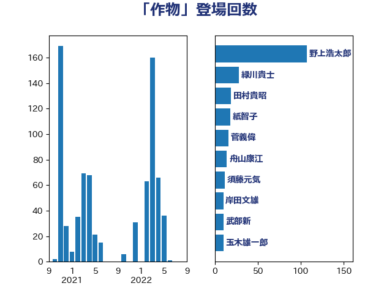

単語「作物」

| 野上浩太郎 | 自由民主党 | 107 回 |
| 緑川貴士 | 立憲民主党 | 28 回 |
| 田村貴昭 | 日本共産党 | 19 回 |
| 紙智子 | 日本共産党 | 18 回 |
| 菅義偉 | 自由民主党 | 16 回 |
| 舟山康江 | 国民民主党 | 14 回 |
| 須藤元気 | 無所属 | 12 回 |
| 岸田文雄 | 自由民主党 | 10 回 |
| 武部新 | 自由民主党 | 10 回 |
| 玉木雄一郎 | 国民民主党 | 10 回 |
| 五十嵐清 | 自由民主党 | 9 回 |
| 宮崎雅夫 | 自由民主党 | 9 回 |
| 石川香織 | 立憲民主党 | 9 回 |
| 宮内秀樹 | 自由民主党 | 8 回 |
| 小寺裕雄 | 自由民主党 | 8 回 |
| 石垣のりこ | 立憲民主党 | 8 回 |
| 神谷裕 | 立憲民主党 | 8 回 |
| 川田龍平 | 立憲民主党 | 7 回 |
| 田名部匡代 | 立憲民主党 | 6 回 |
| 葉梨康弘 | 自由民主党 | 6 回 |
| 伊波洋一 | 無所属 | 5 回 |
| 鈴木憲和 | 自由民主党 | 5 回 |
| 住吉寛紀 | 日本維新の会 | 4 回 |
| 吉田宣弘 | 公明党 | 4 回 |
| 小沼巧 | 立憲民主党 | 4 回 |
| 池畑浩太朗 | 日本維新の会 | 4 回 |
| 大串博志 | 立憲民主党 | 3 回 |
| 山下芳生 | 日本共産党 | 3 回 |
| 山崎正恭 | 公明党 | 3 回 |
| 山田俊男 | 自由民主党 | 3 回 |
| 斎藤洋明 | 自由民主党 | 3 回 |
| 河野義博 | 公明党 | 3 回 |
| 渡辺周 | 立憲民主党 | 3 回 |
| 福島伸享 | 無所属 | 3 回 |
| 簗和生 | 自由民主党 | 3 回 |
| 舞立昇治 | 自由民主党 | 3 回 |
| 藤木眞也 | 自由民主党 | 3 回 |
| 西銘恒三郎 | 自由民主党 | 3 回 |
| 金城泰邦 | 公明党 | 3 回 |
| 上田英俊 | 自由民主党 | 2 回 |
| 中川康洋 | 公明党 | 2 回 |
| 中川郁子 | 自由民主党 | 2 回 |
| 加藤竜祥 | 自由民主党 | 2 回 |
| 堂故茂 | 自由民主党 | 2 回 |
| 小泉進次郎 | 自由民主党 | 2 回 |
| 岩田和親 | 自由民主党 | 2 回 |
| 渡辺孝一 | 自由民主党 | 2 回 |
| 熊野正士 | 公明党 | 2 回 |
| 石井苗子 | 日本維新の会 | 2 回 |
| 稲津久 | 公明党 | 2 回 |
| 空本誠喜 | 日本維新の会 | 2 回 |
| 篠原孝 | 立憲民主党 | 2 回 |
| 細田健一 | 自由民主党 | 2 回 |
| 酒井庸行 | 自由民主党 | 2 回 |
| 野間健 | 立憲民主党 | 2 回 |
| 三木亨 | 自由民主党 | 1 回 |
| 上杉謙太郎 | 自由民主党 | 1 回 |
| 下野六太 | 公明党 | 1 回 |
| 中谷一馬 | 立憲民主党 | 1 回 |
| 井上哲士 | 日本共産党 | 1 回 |
| 仁木博文 | 無所属 | 1 回 |
| 北神圭朗 | 無所属 | 1 回 |
| 坂本哲志 | 自由民主党 | 1 回 |
| 奥野総一郎 | 立憲民主党 | 1 回 |
| 小池晃 | 日本共産党 | 1 回 |
| 山口壯 | 自由民主党 | 1 回 |
| 庄子賢一 | 公明党 | 1 回 |
| 後藤祐一 | 立憲民主党 | 1 回 |
| 末松信介 | 自由民主党 | 1 回 |
| 東徹 | 日本維新の会 | 1 回 |
| 柳ヶ瀬裕文 | 日本維新の会 | 1 回 |
| 根本幸典 | 自由民主党 | 1 回 |
| 梅村みずほ | 日本維新の会 | 1 回 |
| 横沢高徳 | 立憲民主党 | 1 回 |
| 猪口邦子 | 自由民主党 | 1 回 |
| 田村まみ | 国民民主党 | 1 回 |
| 白石洋一 | 立憲民主党 | 1 回 |
| 磯崎仁彦 | 自由民主党 | 1 回 |
| 神田潤一 | 自由民主党 | 1 回 |
| 笹川博義 | 自由民主党 | 1 回 |
| 茂木敏充 | 自由民主党 | 1 回 |
| 萩生田光一 | 自由民主党 | 1 回 |
| 足立康史 | 日本維新の会 | 1 回 |
| 金子恵美 | 立憲民主党 | 1 回 |
| 長友慎治 | 国民民主党 | 1 回 |
| 高木啓 | 自由民主党 | 1 回 |
| 高橋克法 | 自由民主党 | 1 回 |
| 鬼木誠 | 立憲民主党 | 1 回 |